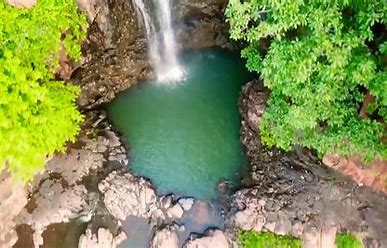
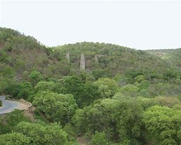

Palkonda Hills, series of ranges in southern Andhra Pradesh state, southern India. The hills trend northwest to southeast and form the central part of the Eastern Ghats. Geologically, they are relicts of ancient mountains formed during the Cambrian Period (about 540 to 490 million years ago) that were subsequently eroded by the Penneru River and its tributaries. The Punchu and Cheyyeru rivers join in a spectacular confluence in a gorge in the corridor between the Velikonda Range and the Palkonda Hills. Formed of quartzites, slates, and lavas, the Palkondas reach an elevation of about 3,000 feet (900 metres) in the south. The valleys between the mountains are drained by streams, many of which, having been dammed for water-storage tanks, provide irrigation for cultivation. The main crops are jowar (grain sorghum) and peanuts (groundnuts). The Palkonda range has a southeast to northwest orientation and traverse the districts of Anantapur and Kadapa. These hills average 2,000 ft in elevation. The highest point of the range is at Buttaid where it reaches a height of 3,060 ft. A westward extension of the range in Anantapur forms the Seshachalam Hills.
Palkonda Hills

| Palkonda Hills | |
|---|---|
|  | |
| Highest Peak | |
| Elevation | 2,000 ft |
| Length | 20 mi (32 km) N-W |
| Geography | |
| Location | India |
| Borders on | Andhra Pradesh |